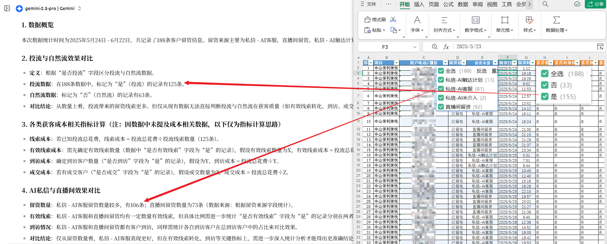

第一部分：认知升级
AI工具版图
聊天窗口类
通用型对话机器人，与AI自然语言交流的直接窗口。
- 国内: 豆包, Kimi, 文心一言
- 国外: ChatGPT, Gemini, Claude
特定应用工具类
专注于特定任务的AI工具，在特定领域效果突出。
- 图片/设计: 即梦, Midjourney
- 视频/动画: 可灵, Pika
- 音乐/音频: Suno, Udio
AI聚合创作工具类
将AI深度融入开发和创作流程的“超级工作台”。
- 代码/开发: Cursor, GitHub Copilot
- 综合创作: cherrystudio, trae
AI工作流平台
自由编排和组合不同AI能力，构建自动化流程。
- 国内: Coze (扣子), Dify.ai
- 国外: n8n
我的“身份”进化论
起点：软件解决方案工程师，聚焦于技术与逻辑。在AI的加持下，我解锁了全新的身份和能力。

新身份一：营销策划
核心能力: 专业级文案撰写
新身份二：网页开发
核心能力: 零基础快速建站
新身份三：美工设计
核心能力: 分钟级海报生成

感悟: AI不是取代，而是“增强”。它让我一个人，活成了一支敏捷的“市场+技术”团队。
AI的局限与对策：我的“AI梦之队”管理心法
坑1: 找错了“天才”
不同模型有不同“性格”，要为合适的任务挑选合适的模型。
坑2: 让“天才”心算
AI是语言大师，不是数学家。专业的事要交给专业工具。
坑3: 聊他不熟的业务
必须通过“知识库”来培养AI的业务感，让它成为内部专家。
第二部分：技能实操
让AI听懂你的“话”：三级火箭式提示词
第一级: 文本提示词
比喻: 像微信聊天，自由直接。
适用: 快速问答、简单创意。
第二级: Markdown提示词
比喻: 像写Word文档，有标题有列表。
适用: 写报告、大纲等复杂任务。
第三级: JSON提示词
比喻: 像填写系统申请表，严格精准。
适用: 系统集成、应用开发。
提示词的“骨架”：从入门到精通
入门框架: “R-T-R” (角色-任务-要求)
一个简单、高效、万能的入门公式，能满足80%的日常需求。
专家框架: “CRISPE”
当“R-T-R”不够用时，这个更强大的专家框架能帮你构建“专家级”的提示词。
- Capacity and Role (能力与角色)
- Reality (背景洞察)
- Instruction (指令)
- Statement (陈述/风格)
- Personality (个性)
- Experiment (试验/追问)
提示词的“生命周期”：从创作到复用
1. 创作与优化
现场实操，展示从想法到高质量提示词的全过程。
3. 管理与分享
介绍好用的“弹药库”来管理和分享你的提示词。
第三部分：实战验证
分组实战：改写真实工作场景中的低效指令，见证AI输出的质的飞跃。
（此部分为现场互动环节）